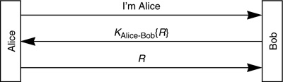
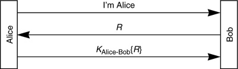
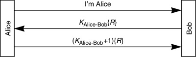

Networking Security Networking Security Networking Security Security Networking Security Networking Security Networking Charlie Kaufman Radia Perlman Mike Speciner Prentice Hall Network Security: Private Communication in a Public World, Second Edition Networking Security Networking Security Networking Security Security Networking Security Networking Security Networking Charlie Kaufman Radia Perlman Mike Speciner Prentice Hall Network Security: Private Communication in a Public World, Second Edition
11.5. Nonce Types
A nonce is a quantity which any given user of a protocol uses only once. Many protocols use nonces, and there are different types of nonces with different sorts of properties. It is possible to introduce security weaknesses by using a nonce with the wrong properties. Various forms of nonce are a timestamp, a large random number, or a sequence number. What's different about these quantities? A large random number tends to make the best nonce, because it cannot be guessed or predicted (as can sequence numbers and timestamps). This is somewhat unintuitive, since non-reuse is only probabilistic. But a random number of 128 bits or more has a negligible chance of being reused. A timestamp requires reasonably synchronized clocks. A sequence number requires nonvolatile state (so that a node can be sure it doesn't use the same number twice even if it crashes and restarts between attempts). When are these properties important?
Protocol 11-22 is a protocol in which the unpredictability of the challenge is important. Let's say Bob is using a sequence number, and when Alice attempts to log in, Bob encrypts the next sequence number and transmits it to Alice, Alice decrypts the challenge and transmits it to Bob. Let's say our eavesdropper Eve watches Alice's authentication exchange, and sees Alice return an R of 7482. If Eve knows Bob is using sequence numbers for the challenge, she can then claim to be Alice, get an undecipherable pile of bits from Bob (the encrypted challenge), and return 7483. Bob will be suitably impressed and assume he's talking to Alice. So it is obvious in this protocol that Bob's challenge has to be unpredictable.

How about if we do it the other way, i.e., make Alice do the encryption as in Protocol 11-23?

Must the challenge then be unpredictable? Let's say again that Bob is using sequence numbers. Eve watches Alice's authentication exchange and sees that R is 7482. Then Eve lies in wait, impersonating Bob's network address, hoping to entrap Alice into authenticating herself to Eve. When she does, Eve sends her the challenge 7483, and Alice will return the encrypted 7483. Now Eve can impersonate Alice to Bob, since Bob's challenge will be 7483, and Eve will know how to encrypt that. This is a lot like a bucket brigade attack (see §6.4.1 The Bucket Brigade/Man-in-the-Middle Attack), to which any authentication-only protocol is vulnerable, but this is somewhat worse. In the bucket brigade attack, Eve has to impersonate Bob's address to Alice and Alice's address to Bob while both Alice and Bob are available on the network. In contrast this attack allows Eve to impersonate Bob's address to Alice when Bob is down (and likewise Alice's address when Alice is down). In many cases it is easier to impersonate someone's address if that someone is not available on the network.
These protocols are also insecure if timestamps are used. Eve has to guess the timestamp Bob will use, and she might be off by a minute or two. If the timestamp has coarse granularity, say seconds, Eve has a good chance of being able to impersonate Alice. If the timestamp has, say, nanosecond granularity, then it really does become just like a random number and the protocol is secure.
Here's a protocol in which it would be perfectly secure to use a predictable nonce for R. Even if Eve could predict what R would be, she can't predict either the value sent by Bob or the appropriate response from Alice.

Getting truly random numbers can be expensive. A common method of obtaining pseudorandom numbers is by using a key known only to the node generating the numbers, and encrypting any sort of nonce, say a sequence number or timestamp.
|